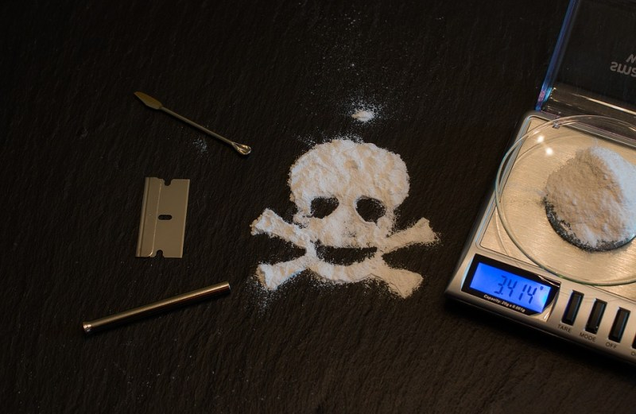

People from all walks of life can experience problems with their drug use, regardless of age, race, or background. While some are able to use recreational or prescription drugs without experiencing negative effects, others
find that substance use takes a serious toll on their health and well-being. Abusing drugs can leave you feeling helpless, isolated, or ashamed. If you’re worried about your own or a loved one’s drug use, learning how drug
abuse and addiction develops—and why it can have such a powerful hold—will give you a better understanding of how to best deal with the problem and regain control of your life.
When does drug use become drug abuse or addiction
People start using drugs for many different reasons. Some experiment with recreational drugs out of curiosity, to have a good time, because friends are doing it, or to ease problems such as stress, anxiety, or depression.
However, it’s not just illegal drugs, such as cocaine or heroin, that can lead to abuse and addiction. Prescription medications such as painkillers, sleeping pills, and tranquilizers can cause similar problems. In fact,
next to marijuana, prescription painkillers are the most abused drugs in the U.S. and more people die from overdosing powerful opioid painkillers each day than from traffic accidents and gun deaths combined. And addiction
to opioid painkillers can be so powerful it has become the major risk factor for heroin abuse.
Of course, drug use—either illegal or prescription—doesn’t automatically lead to abuse, and there is no specific
point at which drug use moves from casual to problematic. Drug abuse and addiction is less about the type or amount of the substance consumed or the frequency of your drug use, and more about the consequences of that drug
use. If your drug use is causing problems in your life—at work, school, home, or in your relationships—you likely have a drug abuse or addiction problem.
Recognizing that you have a problem is the first step
on the road to recovery, one that takes tremendous courage and strength. Facing your problem without minimizing the issue or making excuses can feel frightening and overwhelming, but recovery is within reach. If you’re
ready to seek help, you can overcome your addiction and build a satisfying, drug-free life for yourself.

Risk factor for drug addiction
While anyone can develop problems from using drugs, vulnerability to substance addiction differs from person to person. While your genes, mental health, family and social environment all play a role, risk factors that increase
your vulnerability include:
● Family history of addiction ● Abuse, neglect, or other traumatic experiences ● Mental disorders such as depression and anxiety ● Early
use of drugs ● Method of administration—smoking or injecting a drug may increase its addictive potential
Drug addiction and the brain
While each drug produces different physical effects, all abused substances share one thing in common: repeated use can alter the way the brain functions. This includes commonly abused prescription medications as well as recreational
drugs.
● Taking the drug causes a rush of the hormone dopamine in your brain, which triggers feelings of pleasure. Your brain remembers these feelings and wants them repeated.
● When you become addicted, the
substance takes on the same significance as other survival behaviors, such as eating and drinking.
● Changes in your brain interfere with your ability to think clearly, exercise good judgment, control your behavior,
and feel normal without drugs.
● No matter which drug you’re addicted to, the uncontrollable craving to use grows more important than anything else, including family, friends, career, and even your own health and happiness.
● The urge to use is so strong that your mind finds many ways to deny or rationalize the addiction. You may drastically underestimate the quantity of drugs you’re taking, how much it impacts your life, and the level
of control you have over your drug use.
How drug abuse and drug addiction develops
While each drug produces different physical effects, all abused substances share one thing in common: repeated use can alter the way the brain functions. This includes commonly abused prescription medications as well as recreational
drugs.
Taking the drug causes a rush of the hormone dopamine in your brain, which triggers feelings of pleasure. Your brain remembers these feelings and wants them repeated. When you become addicted, the
substance takes on the same significance as other survival behaviors, such as eating and drinking. Changes in your brain interfere with your ability to think clearly, exercise good judgment, control your behavior,
and feel normal without drugs. No matter which drug you’re addicted to, the uncontrollable craving to use grows more important than anything else, including family, friends, career, and even your own health and happiness. The
urge to use is so strong that your mind finds many ways to deny or rationalize the addiction. You may drastically underestimate the quantity of drugs you’re taking, how much it impacts your life, and the level of control you
have over your drug use. How drug abuse and drug addiction develops There’s a fine line between regular drug use and drug abuse and addiction. Very few drug abusers or addicts are able to recognize when they’ve
crossed that line. While frequency or the amount of drugs consumed do not necessarily constitute drug abuse or addiction, they can often be indicators of drug-related problems.
If the drug fulfills a valuable need,
you may find yourself increasingly relying on it. You may take illegal drugs to calm or energize yourself or make you more confident. You may start abusing prescription drugs to relieve pain, cope with panic attacks, or improve
concentration at school or work. If you are using drugs to fill a void in your life, you’re more at risk of crossing the line from casual drug use to drug abuse and addiction. To maintain a healthy balance in your life, you
need to have positive experiences and feel good about your life without any drug use.
Drug abuse may start as a way to socially connect. People often try drugs for the first time in social situations with friends
and acquaintances. A strong desire to fit in to the group can make it feel like doing the drugs with them is the only option.
Problems can sometimes sneak up on you, as your drug use gradually increases over time.
Smoking a joint with friends over the weekend, or taking ecstasy at a rave, or painkillers when your back aches, for example, can change from using drugs a couple of days a week to using them every day. Gradually, getting and
using the drug becomes more and more important to you.
As drug abuse takes hold, you may miss or frequently be late for work or school, your job performance may progressively deteriorate, and you may start to neglect
social or family responsibilities. Your ability to stop using is eventually compromised. What began as a voluntary choice has turned into a physical and psychological need.
Eventually drug abuse can consume your
life, stopping social and intellectual development. This only reinforces feelings of isolation.
With the right treatment and support, you can counteract the disruptive effects of drug use and regain control of
your life. The first obstacle is to recognize and admit you have a problem, or listen to loved ones who are often better able to see the negative effects drug use is having on your life.